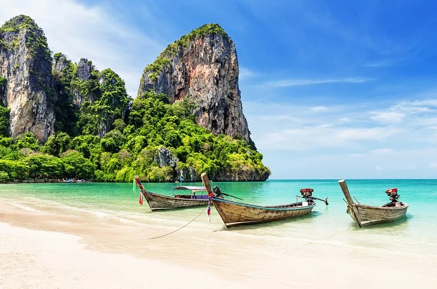
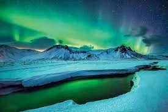

Adventures Await
Thailand

Called the “Land of Smiles,” Thailand has become one of the leading travel destinations in Asia over the last few decades. Officially known as the Kingdom of Thailand, this Southeast Asian nation is the only country in the region to have avoided colonialism, remaining a sovereign country in its own right. Economically, Thailand is still developing, although this doesn’t stop it from dominating much of the region’s rice and tourism industries.
Iceland

Weird moonscapes, Viking history, unearthly lakes, remote glaciers, snowy wastes, sulphuric springs, geothermal spas and the Gates of Hell – if this sounds like your perfect vacation destination, Iceland is the place to go! Set inches below the Arctic Circle, yet with a surprisingly mild climate, this huge, highly volcanic rock lies right on the Mid-Atlantic Ridge between the North American and Eurasian plates. Iceland offers adventurous visitors a combination of spectacular, contrasting experiences including active volcanoes, fascinatingly different national parks, and a unique, unspoiled environment.
New Zealand
New Zealand is on every traveler’s bucket list. It is a relatively young and wealthy Pacific agricultural nation with breathtaking views. New Zealand language and customs still bear the vestiges of British culture. New Zealand travel is a once in a lifetime experience. New Zealand is beginning to experience more cultural diversity, as newcomers arrive from places like Asia and the Pacific islands. Visit New Zealand and experience a diverse culture.